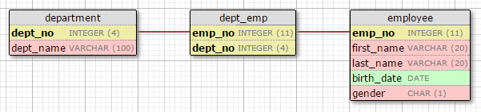

Getting Started
環境設定
ビルドツールの設定
uroboroSQLをMavenプロジェクトに組み込むには、pom.xmlに以下の記述を加えて下さい。
uroboroSQLはMaven Central Repositoryで公開されています。
1 | <dependency> |
Gradleプロジェクトの場合は、build.gradleのdependencies内に以下の記述を加えて下さい。
1 | compile group: 'jp.co.future', name: 'uroborosql', version: '0.6.1' |
事前準備
事前準備として、
をインストールしてください。
サンプルプロジェクトの実行
uroboroSQLのサンプルアプリケーションであるuroborosql-sampleを使ってuroboroSQLを動かしてみましょう。
まず始めにuroborosql-sampleから最新のソースコードを取得します。1
git clone https://github.com/future-architect/uroborosql-sample.git
取得できたらcloneしたフォルダに移動します。1
cd uroborosql-sample
まずはサンプルアプリケーションを実行してみましょう。
サンプルアプリケーションは以下の起動コマンドで実行します。1
mvn -PrunMain
これでサンプルアプリケーションが実行されます。（初回実行時は必要なライブラリをダウンロードするため時間がかかります）
アプリケーションの実行ログが出力され、Mavenが正常終了すれば成功です。
色々ログが流れますが、この中でDB接続からテーブル作成、データの挿入、検索、バッチ更新、トランザクション、といった一連の処理が実行されています。
Main.java1
2
3
4
5
6
7
8
9
10
11
12
13
14
15
16
17
18
19
20
21
22
23
24
25
26
27
28
29
30
31
32
33
34
35
36
37
38
39
40
41
42
43
44
45
46
47
48
49
50
51
52
53
54
55
56
57
58
59
60
61
62
63
64
65
66
67
68
69
70
71
72
73
74
75
76
77
78
79
80
81
82
83
84
85
86
87
88
89
90
91
92
93
94
95
96
97
98
99
100
101
102
103
104
105
106
107
108
109
110
111
112
113
114
115
116
117
118
119
120
121
122
123
124
125
126
127
128
129
130
131
132
133
134
135
136
137
138
139
140
141
142
143
144
145
146
147
148
149
150
151
152
153
154
155
156
157
158
159
160
161
162
163
164
165
166
167
168
169
170
171
172
173
174
175
176
177
178
179
180
181
182
183
184
185
186
187
188
189
190
191
192
193
194
195
196
197
198
199
200
201
202
203
204
205
206
207
208
209
210
211
212
213
214
215
216
217
218
219
220
221
222
223
224
225
226
227
228
229
230
231
232
233package jp.co.future.uroborosql.sample;
import java.io.IOException;
import java.io.UncheckedIOException;
import java.nio.file.Files;
import java.nio.file.Path;
import java.nio.file.Paths;
import java.time.LocalDate;
import java.util.Arrays;
import java.util.HashMap;
import java.util.List;
import java.util.Map;
import java.util.stream.Collectors;
import java.util.stream.IntStream;
import java.util.stream.Stream;
import jp.co.future.uroborosql.SqlAgent;
import jp.co.future.uroborosql.SqlAgentFactoryImpl;
import jp.co.future.uroborosql.UroboroSQL;
import jp.co.future.uroborosql.config.SqlConfig;
import jp.co.future.uroborosql.context.SqlContextFactoryImpl;
import jp.co.future.uroborosql.sample.entity.Department;
import jp.co.future.uroborosql.sample.entity.Employee;
import jp.co.future.uroborosql.sample.type.Gender;
import jp.co.future.uroborosql.utils.CaseFormat;
import org.slf4j.Logger;
import org.slf4j.LoggerFactory;
/**
* uroboroSQL Sample Application
*
* @author H.Sugimoto
*/
public class Main {
/** ロガー */
private static final Logger log = LoggerFactory.getLogger(Main.class);
public static void main(final String... args) throws Exception {
// create SqlConfig
SqlConfig config = UroboroSQL
.builder("jdbc:h2:mem:test;DB_CLOSE_DELAY=-1", "sa", "")
// SqlContextFactoryの設定（Enum定数パッケージ設定の追加）
.setSqlContextFactory(
new SqlContextFactoryImpl().setEnumConstantPackageNames(Arrays.asList(Gender.class.getPackage()
.getName())))
// SqlAgentFactoryの設定（Queryの戻り値のMapのキー文字列のデフォルトCaseFormat設定の追加）
.setSqlAgentFactory(new SqlAgentFactoryImpl().setDefaultMapKeyCaseFormat(CaseFormat.CAMEL_CASE))
.build();
// create SqlAgent. SqlAgent implements AutoClosable.
try (SqlAgent agent = config.agent()) {
// create table : テーブル作成
int createCount = agent.update("ddl/create_tables").count();
log("ddl/create_tables count={}", createCount);
// setup data : 初期データ挿入
int setupCount = agent.update("setup/insert_data").count();
log("setup/insert_data count={}", setupCount);
// select department data (collect) : 部署データ検索（collect API）
log("select department data (collect)");
// no parameter : バインドパラメータ指定なしで検索
List<Map<String, Object>> departments = agent.query("department/select_department").collect();
departments.forEach(data -> log(toS(data)));
// add bind parameter : バインドパラメータを設定して検索
log("select department data (collect) set param(dept_no=1001)");
departments = agent.query("department/select_department").param("dept_no", 1001).collect();
departments.forEach(data -> log(toS(data)));
// with Entity : エンティティによる部署データ検索
log("select department data with Entity (collect)");
// no parameter : 条件指定なしで検索
List<Department> departmentEntities = agent.query(Department.class).collect();
departmentEntities.forEach(data -> log(toS(data)));
// add bind parameter : 条件を設定して検索
log("select department data with Entity (collect) set param(deptNo=1001)");
departmentEntities = agent.query(Department.class).param("deptNo"/* camelCase */, 1001).collect();
departmentEntities.forEach(data -> log(toS(data)));
// find department by dept_no key : キー（dept_no）を指定して、部署データ１件取得（find API）
log("select department data by key (find)");
Department department = agent.find(Department.class, 1002).orElse(null);
log(toS(department));
// find first : findFirstを使用した先頭1件検索
log("select first employee data.(Optional)");
agent.query("employee/select_employee").findFirst().ifPresent(m -> log(toS(m)));
// select employee data (stream) : 従業員データ検索（stream API）
log("select employee data (stream)");
// no parameter : バインドパラメータ指定なしで検索（BEGIN-ENDで囲まれた範囲内のIF条件がすべてfalseのため、BEGIN-ENDの中が削除される）
agent.query("employee/select_employee").stream().forEachOrdered(m -> log(toS(m)));
// add bind date parameter : バインドパラメータ（日付型）を指定して検索
agent.query("employee/select_employee").param("birth_date_from", LocalDate.of(1990, 1, 1)).stream()
.forEachOrdered(m -> log(toS(m)));
// add bind list parameter : バインドパラメータ（IN句用）を指定して検索
agent.query("employee/select_employee").paramList("gender_list", Gender.FEMALE).stream()
.forEachOrdered(m -> log(toS(m)));
// use sql enum constant : SQL上でEnum定数を使用した検索
agent.query("employee/select_employee").param("female", true).stream().forEachOrdered(m -> log(toS(m)));
// with Entity : エンティティによる従業員データ検索（stream API）
log("select employee data with Entity (stream)");
// no parameter : バインドパラメータ指定なしで検索
agent.query(Employee.class).stream().forEachOrdered(m -> log(toS(m)));
// use LocalDate parameter : LocalDateを使用した検索
agent.query(Employee.class).param("birthDate", LocalDate.of(1970, 1, 2)).stream()
.forEachOrdered(m -> log(toS(m)));
// use enum parameter : Enumを使用した検索
agent.query(Employee.class).param("gender", Gender.FEMALE).stream().forEachOrdered(m -> log(toS(m)));
log("delete tables with sql literal");
// update with sql literal
log("delete dept_emp count={}", agent.updateWith("delete from dept_emp").count());
log("delete department count={}", agent.updateWith("delete from department").count());
log("delete employee count={}", agent.updateWith("delete from employee").count());
log("commit!");
agent.commit();
// transaction (requiredNew)
agent.requiresNew(() -> {
log("create new transaction.");
// batch insert (new v0.5.0)
log("department/insert_department batch insert.");
// department
int deptCount = agent.batch("department/insert_department")
.paramStream(getDataByFile(Paths.get("src/main/resources/data/department.tsv"))).count();
log("department/insert_department count={}", deptCount);
log("employee/insert_employee batch insert.");
// employee
// execute by 2 rows
int empCount = agent.batch("employee/insert_employee")
.paramStream(getDataByFile(Paths.get("src/main/resources/data/employee.tsv")))
.by((ctx, row) -> ctx.batchCount() == 2).count();
log("employee/insert_employee count={}", empCount);
log("relation/insert_dept_emp batch insert.");
// dept_emp
// log message when batch execute.
int deptEmpCount = agent.batch("relation/insert_dept_emp")
.paramStream(getDataByFile(Paths.get("src/main/resources/data/dept_emp.tsv")))
.batchWhen((agt, ctx) -> log("batch execute.")).count();
log("relation/insert_dept_emp count={}", deptEmpCount);
log("employee/select_employee in transaction select");
agent.query("employee/select_employee").stream().forEachOrdered(m -> log(toS(m)));
log("transaction rollback!");
agent.setRollbackOnly();
});
agent.requiresNew(() -> {
// insert with Entity
log("insert with Entity");
Department informationDept = new Department();
informationDept.setDeptNo(1005);
informationDept.setDeptName("information");
agent.insert(informationDept);
log(toS(agent.find(Department.class, 1005).get()));
// update with Entity
log("update with Entity");
informationDept.setDeptName("Information System");
agent.update(informationDept);
log(toS(agent.find(Department.class, 1005).get()));
// delete with Entity
log("delete with Entity");
agent.delete(informationDept);
if (!agent.find(Department.class, 1005).isPresent()) {
log("deptNo = 1005 deleted!!");
}
log("transaction rollback!");
agent.setRollbackOnly();
});
log("employee/select_employee after transaction select. employee is empty.");
agent.query("employee/select_employee").stream().forEachOrdered(m -> log(toS(m)));
}
}
/**
* Read TSV file data and convert to List Object.
*
* @param filePath TSV file path.
* @return Data List
*/
private static Stream<Map<String, Object>> getDataByFile(final Path filePath) {
try {
List<String> lines = Files.readAllLines(filePath);
String[] header = lines.get(0).split("\\t");
return lines.stream()
.skip(1)
.map(s -> s.split("\\t"))
.map(data -> IntStream.range(0, header.length)
.<Map<String, Object>> collect(HashMap::new, (row, i) -> row.put(header[i], data[i]),
Map::putAll));
} catch (IOException e) {
e.printStackTrace();
throw new UncheckedIOException(e);
}
}
("unchecked")
private static String toS(final Object obj) {
if (obj instanceof Map) {
Map<String, Object> map = (Map<String, Object>) obj;
return map.entrySet().stream()
.map(e -> e.getKey() + "=" + e.getValue())
.collect(Collectors.joining(",", "{", "}"));
} else {
return obj.toString();
}
}
private static void log(final String format, final Object... arguments) {
log.info(format, arguments);
}
}
実行ログ1
2
3
4
5
6
7
8
9
10
11
12
13
14
15
16
17
18
19
20
21
22
23
24
25
26
27
28
29
30
31
32
33
34
35
36
37
38
39
40
41
42
43
44
45
46
47
48
49
50
51
52
53
54
55
56
57
58
59
60
61
62
63
64
65
66
67
68
69
70
71
72
73
74
75
76
77
78
79
80
81
82
83
84
85
86
87
88
89
90
91
92
93
94
95
96
97
98
99
100
101
102
103
104
105
106
107
108
109
110
111
112
113
114
115
116
117
118
119
120
121
122
123
124
125
126
127
128
129
130
131
132
133
134
135
136
137
138
139
140
141
142
143
144
145
146
147
148
149
150
151
152
153
154
155
156
157
158
159
160
161
162
163
164
165
166
167
168
169
170
171
172
173
174
175
176
177
178
179
180
181
182
183
184
185
186
187
188
189
190
191
192
193
194
195
196
197
198
199
200
201
202
203
204
205
206
207
208
209
210
211
212
213
214
215
216
217
218
219
220
221
222
223
224
225
226
227
228
229
230
231
232
233
234
235
236
237
238
239
240
241
242
243
244
245
246
247
248
249
250
251
252
253
254
255
256
257
258
259
260
261
262
263
264
265
266
267
268
269
270
271
272
273
274
275
276
277
278
279
280
281
282
283
284
285
286
287
288
289
290
291
292
293
294
295
296
297
298
299
300
301
302
303
304
305
306
307
308
309
310
311
312
313
314
315
316
317
318
319
320
321
322
323
324
325
326
327
328
329
330
331
332
333
334
335
336
337
338
339
340
341
342
343
344
345
346
347
348
349
350
351
352
353
354
355
356
357
358
359
360
361
362
363
364
365
366
367
368
369
370
371
372
373
374
375
376
377
378
379
380
381
382
383
384
385
386
387
388
389
390
391
392
393
394
395
396
397
398
399
400
401
402
403
404
405
406
407
408
409
410
411
412
413
414
415
416
417
418
419
420
421
422
423
424
425
426
427
428
429
430
431
432
433
434
435
436
437
438
439
440
441
442
443
444
445
446
447
448
449
450
451
452
453
454
455
456
457
458
459
460
461
462
463
464
465
466
467
468
469
470
471
472
473
474
475
476
477
478
479
480
481
482
483
484
485
486
487
488
489
490
491
492
493
494
495
496
497
498
499
500
501
502
503
504
505
506
507
508
509
510
511
512
513
514
515
516
517
518
519
520
521
522
523
524
525
526
527
528
529
530
531
532
533
534
535
536
537
538
539
540
541
542
543
544
545
546
547
548
549
550
551
552
553
554
555
556
557
558
559
560
561
562
563
564
565
566
567
568
569
570
571
572
573
574
575
576
577
578
579
580
581
582
583
584
585
586
587
588
589
590
591
592
593
594
595
596
597
598
599
600
601
602
603
604
605
606
607
608
609
610
611
612
613
614
615
616
617
618
619
620
621
622
623
624
625
626
627
628
629
630
631
632
633
634
635
636
637
638
639
640
641
642
643
644
645
646
647
648
649
650
651[DEBUG] Start loading SQL template.[C:\git\uroborosql-sample\target\classes\sql]
[DEBUG] Loading SQL template.[]
[DEBUG] Loading SQL template.[ddl]
[DEBUG] Loading SQL template.[department]
[DEBUG] Loading SQL template.[employee]
[DEBUG] Loading SQL template.[relation]
[DEBUG] Loading SQL template.[setup]
[DEBUG] Enum [name：CLS_GENDER_MALE, value：M] added to parameter.
[DEBUG] Enum [name：CLS_GENDER_FEMALE, value：F] added to parameter.
[DEBUG] Enum [name：CLS_GENDER_OTHER, value：O] added to parameter.
[DEBUG] Executed SQL[
-- employee
drop table if exists employee cascade;
create table employee (
emp_no NUMBER(11) not null
, first_name VARCHAR(20) not null
, last_name VARCHAR(20) not null
, birth_date DATE not null
, gender CHAR(1) not null
, lock_version NUMBER(10) not null default 0
, constraint employee_PKC primary key (emp_no)
) ;
-- dept_emp
drop table if exists dept_emp cascade;
create table dept_emp (
emp_no NUMBER(11) not null
, dept_no NUMBER(4) not null
, constraint dept_emp_PKC primary key (emp_no,dept_no)
) ;
-- department
drop table if exists department cascade;
create table department (
dept_no NUMBER(4) not null
, dept_name VARCHAR(100) not null
, lock_version NUMBER(10) not null default 0
, constraint department_PKC primary key (dept_no)
) ;
comment on table employee is 'employee';
comment on column employee.emp_no is 'emp_no';
comment on column employee.first_name is 'first_name';
comment on column employee.last_name is 'last_name';
comment on column employee.birth_date is 'birth_date';
comment on column employee.gender is 'gender ''F''emale/''M''ale/''O''ther';
comment on column employee.lock_version is 'lock_version';
comment on table dept_emp is 'dept_emp';
comment on column dept_emp.emp_no is 'emp_no';
comment on column dept_emp.dept_no is 'dept_no';
comment on table department is 'department';
comment on column department.dept_no is 'dept_no';
comment on column department.dept_name is 'dept_name';
comment on column department.lock_version is 'lock_version'
]
[DEBUG] Execute update SQL.
[DEBUG] SQL execution time [ddl/create_tables] : [00:00:00.018]
[INFO ] ddl/create_tables count=0
[DEBUG] Executed SQL[
insert into department (dept_no, dept_name) values (1001, 'sales');
insert into department (dept_no, dept_name) values (1002, 'export');
insert into department (dept_no, dept_name) values (1003, 'accounting');
insert into department (dept_no, dept_name) values (1004, 'personnel');
insert into employee (emp_no, first_name, last_name, birth_date, gender) values (0001, 'Bob', 'Smith', '1970-01-02', 'M');
insert into employee (emp_no, first_name, last_name, birth_date, gender) values (0002, 'Susan', 'Davis', '1969-02-10', 'F');
insert into employee (emp_no, first_name, last_name, birth_date, gender) values (0003, 'John', 'Wilson', '1982-05-08', 'M');
insert into employee (emp_no, first_name, last_name, birth_date, gender) values (0004, 'Sharon', 'Johnson', '1990-01-20', 'F');
insert into employee (emp_no, first_name, last_name, birth_date, gender) values (0005, 'Stephen', 'Taylor', '2003-12-31', 'M');
insert into dept_emp (emp_no, dept_no) values (0001, '1001');
insert into dept_emp (emp_no, dept_no) values (0002, '1001');
insert into dept_emp (emp_no, dept_no) values (0003, '1002');
insert into dept_emp (emp_no, dept_no) values (0004, '1003');
insert into dept_emp (emp_no, dept_no) values (0005, '1004')
]
[DEBUG] Execute update SQL.
[DEBUG] SQL execution time [setup/insert_data] : [00:00:00.007]
[INFO ] setup/insert_data count=1
[INFO ] select department data (collect)
[DEBUG] Evaluation Expression：[SF.isNotEmpty(dept_no)], Result：[false], Parameter：[dept_no:[null]]
[DEBUG] Evaluation Expression：[SF.isNotEmpty(dept_name)], Result：[false], Parameter：[dept_name:[null]]
[DEBUG] Executed SQL[
SELECT /* department/select_department */
DEPT.DEPT_NO AS DEPT_NO
, DEPT.DEPT_NAME AS DEPT_NAME
, DEPT.LOCK_VERSION AS LOCK_VERSION
FROM
DEPARTMENT DEPT
]
[DEBUG] Execute search SQL.
[DEBUG] SQL execution time [department/select_department] : [00:00:00.005]
[INFO ] {deptNo=1001,deptName=sales,lockVersion=0}
[INFO ] {deptNo=1002,deptName=export,lockVersion=0}
[INFO ] {deptNo=1003,deptName=accounting,lockVersion=0}
[INFO ] {deptNo=1004,deptName=personnel,lockVersion=0}
[INFO ] select department data (collect) set param(dept_no=1001)
[DEBUG] Evaluation Expression：[SF.isNotEmpty(dept_no)], Result：[true], Parameter：[dept_no:[1001]]
[DEBUG] Evaluation Expression：[SF.isNotEmpty(dept_name)], Result：[false], Parameter：[dept_name:[null]]
[DEBUG] Executed SQL[
SELECT /* department/select_department */
DEPT.DEPT_NO AS DEPT_NO
, DEPT.DEPT_NAME AS DEPT_NAME
, DEPT.LOCK_VERSION AS LOCK_VERSION
FROM
DEPARTMENT DEPT
WHERE
DEPT.DEPT_NO = ?/*dept_no*/
]
[DEBUG] Set the parameter.[INDEX[1], Parameter name[dept_no], Value[1001], Class[Integer]]
[DEBUG] Execute search SQL.
[DEBUG] SQL execution time [department/select_department] : [00:00:00.000]
[INFO ] {deptNo=1001,deptName=sales,lockVersion=0}
[INFO ] select department data with Entity (collect)
[DEBUG] Evaluation Expression：[deptNo != null], Result：[false], Parameter：[deptNo:[null]]
[DEBUG] Evaluation Expression：[SF.isNotEmpty(deptName)], Result：[false], Parameter：[deptName:[null]]
[DEBUG] Evaluation Expression：[lockVersion != null], Result：[false], Parameter：[lockVersion:[null]]
[DEBUG] Executed SQL[
SELECT /* mapping @ Department */
DEPT_NO AS DEPT_NO -- dept_no
, DEPT_NAME AS DEPT_NAME -- dept_name
, LOCK_VERSION AS LOCK_VERSION -- lock_version
FROM PUBLIC.DEPARTMENT
ORDER BY
DEPT_NO
]
[DEBUG] Execute search SQL.
[DEBUG] SQL execution time [null] : [00:00:00.000]
[INFO ] Department [deptNo=1001, deptName=sales, lockVersion=0]
[INFO ] Department [deptNo=1002, deptName=export, lockVersion=0]
[INFO ] Department [deptNo=1003, deptName=accounting, lockVersion=0]
[INFO ] Department [deptNo=1004, deptName=personnel, lockVersion=0]
[INFO ] select department data with Entity (collect) set param(deptNo=1001)
[DEBUG] Evaluation Expression：[deptNo != null], Result：[true], Parameter：[deptNo:[1001]]
[DEBUG] Evaluation Expression：[SF.isNotEmpty(deptName)], Result：[false], Parameter：[deptName:[null]]
[DEBUG] Evaluation Expression：[lockVersion != null], Result：[false], Parameter：[lockVersion:[null]]
[DEBUG] Executed SQL[
SELECT /* mapping @ Department */
DEPT_NO AS DEPT_NO -- dept_no
, DEPT_NAME AS DEPT_NAME -- dept_name
, LOCK_VERSION AS LOCK_VERSION -- lock_version
FROM PUBLIC.DEPARTMENT
WHERE
DEPT_NO = ?/*deptNo*/
ORDER BY
DEPT_NO
]
[DEBUG] Set the parameter.[INDEX[1], Parameter name[deptNo], Value[1001], Class[Integer]]
[DEBUG] Execute search SQL.
[DEBUG] SQL execution time [null] : [00:00:00.000]
[INFO ] Department [deptNo=1001, deptName=sales, lockVersion=0]
[INFO ] select department data by key (find)
[DEBUG] Evaluation Expression：[deptNo != null], Result：[true], Parameter：[deptNo:[1002]]
[DEBUG] Evaluation Expression：[SF.isNotEmpty(deptName)], Result：[false], Parameter：[deptName:[null]]
[DEBUG] Evaluation Expression：[lockVersion != null], Result：[false], Parameter：[lockVersion:[null]]
[DEBUG] Executed SQL[
SELECT /* mapping @ Department */
DEPT_NO AS DEPT_NO -- dept_no
, DEPT_NAME AS DEPT_NAME -- dept_name
, LOCK_VERSION AS LOCK_VERSION -- lock_version
FROM PUBLIC.DEPARTMENT
WHERE
DEPT_NO = ?/*deptNo*/
ORDER BY
DEPT_NO
]
[DEBUG] Set the parameter.[INDEX[1], Parameter name[deptNo], Value[1002], Class[Integer]]
[DEBUG] Execute search SQL.
[DEBUG] SQL execution time [null] : [00:00:00.000]
[INFO ] Department [deptNo=1002, deptName=export, lockVersion=0]
[INFO ] select first employee data.(Optional)
[DEBUG] Evaluation Expression：[SF.isNotEmpty(emp_no)], Result：[false], Parameter：[emp_no:[null]]
[DEBUG] Evaluation Expression：[SF.isNotEmpty(first_name)], Result：[false], Parameter：[first_name:[null]]
[DEBUG] Evaluation Expression：[SF.isNotEmpty(last_name)], Result：[false], Parameter：[last_name:[null]]
[DEBUG] Evaluation Expression：[SF.isNotEmpty(birth_date_from)], Result：[false], Parameter：[birth_date_from:[null]]
[DEBUG] Evaluation Expression：[SF.isNotEmpty(birth_date_to)], Result：[false], Parameter：[birth_date_to:[null]]
[DEBUG] Evaluation Expression：[gender_list != null], Result：[false], Parameter：[gender_list:[null]]
[DEBUG] Evaluation Expression：[female != null and female], Result：[false], Parameter：[female:[null],female:[null]]
[DEBUG] Executed SQL[
SELECT /* employee/select_employee */
EMP.EMP_NO AS EMP_NO
, EMP.FIRST_NAME AS FIRST_NAME
, EMP.LAST_NAME AS LAST_NAME
, EMP.BIRTH_DATE AS BIRTH_DATE
, EMP.GENDER AS GENDER
, EMP.LOCK_VERSION AS LOCK_VERSION
FROM
EMPLOYEE EMP
]
[DEBUG] Execute search SQL.
[DEBUG] SQL execution time [employee/select_employee] : [00:00:00.000]
[INFO ] {empNo=1,firstName=Bob,lastName=Smith,birthDate=1970-01-02,gender=M,lockVersion=0}
[INFO ] select employee data (stream)
[DEBUG] Evaluation Expression：[SF.isNotEmpty(emp_no)], Result：[false], Parameter：[emp_no:[null]]
[DEBUG] Evaluation Expression：[SF.isNotEmpty(first_name)], Result：[false], Parameter：[first_name:[null]]
[DEBUG] Evaluation Expression：[SF.isNotEmpty(last_name)], Result：[false], Parameter：[last_name:[null]]
[DEBUG] Evaluation Expression：[SF.isNotEmpty(birth_date_from)], Result：[false], Parameter：[birth_date_from:[null]]
[DEBUG] Evaluation Expression：[SF.isNotEmpty(birth_date_to)], Result：[false], Parameter：[birth_date_to:[null]]
[DEBUG] Evaluation Expression：[gender_list != null], Result：[false], Parameter：[gender_list:[null]]
[DEBUG] Evaluation Expression：[female != null and female], Result：[false], Parameter：[female:[null],female:[null]]
[DEBUG] Executed SQL[
SELECT /* employee/select_employee */
EMP.EMP_NO AS EMP_NO
, EMP.FIRST_NAME AS FIRST_NAME
, EMP.LAST_NAME AS LAST_NAME
, EMP.BIRTH_DATE AS BIRTH_DATE
, EMP.GENDER AS GENDER
, EMP.LOCK_VERSION AS LOCK_VERSION
FROM
EMPLOYEE EMP
]
[DEBUG] Execute search SQL.
[DEBUG] SQL execution time [employee/select_employee] : [00:00:00.000]
[INFO ] {empNo=1,firstName=Bob,lastName=Smith,birthDate=1970-01-02,gender=M,lockVersion=0}
[INFO ] {empNo=2,firstName=Susan,lastName=Davis,birthDate=1969-02-10,gender=F,lockVersion=0}
[INFO ] {empNo=3,firstName=John,lastName=Wilson,birthDate=1982-05-08,gender=M,lockVersion=0}
[INFO ] {empNo=4,firstName=Sharon,lastName=Johnson,birthDate=1990-01-20,gender=F,lockVersion=0}
[INFO ] {empNo=5,firstName=Stephen,lastName=Taylor,birthDate=2003-12-31,gender=M,lockVersion=0}
[DEBUG] Evaluation Expression：[SF.isNotEmpty(emp_no)], Result：[false], Parameter：[emp_no:[null]]
[DEBUG] Evaluation Expression：[SF.isNotEmpty(first_name)], Result：[false], Parameter：[first_name:[null]]
[DEBUG] Evaluation Expression：[SF.isNotEmpty(last_name)], Result：[false], Parameter：[last_name:[null]]
[DEBUG] Evaluation Expression：[SF.isNotEmpty(birth_date_from)], Result：[true], Parameter：[birth_date_from:[1990,1,1]]
[DEBUG] Evaluation Expression：[SF.isNotEmpty(birth_date_to)], Result：[false], Parameter：[birth_date_to:[null]]
[DEBUG] Evaluation Expression：[gender_list != null], Result：[false], Parameter：[gender_list:[null]]
[DEBUG] Evaluation Expression：[female != null and female], Result：[false], Parameter：[female:[null],female:[null]]
[DEBUG] Executed SQL[
SELECT /* employee/select_employee */
EMP.EMP_NO AS EMP_NO
, EMP.FIRST_NAME AS FIRST_NAME
, EMP.LAST_NAME AS LAST_NAME
, EMP.BIRTH_DATE AS BIRTH_DATE
, EMP.GENDER AS GENDER
, EMP.LOCK_VERSION AS LOCK_VERSION
FROM
EMPLOYEE EMP
WHERE
EMP.BIRTH_DATE >= ?/*birth_date_from*/
]
[DEBUG] Set the parameter.[INDEX[1], Parameter name[birth_date_from], Value[1990-01-01], Class[LocalDate]]
[DEBUG] Execute search SQL.
[DEBUG] SQL execution time [employee/select_employee] : [00:00:00.000]
[INFO ] {empNo=4,firstName=Sharon,lastName=Johnson,birthDate=1990-01-20,gender=F,lockVersion=0}
[INFO ] {empNo=5,firstName=Stephen,lastName=Taylor,birthDate=2003-12-31,gender=M,lockVersion=0}
[DEBUG] Evaluation Expression：[SF.isNotEmpty(emp_no)], Result：[false], Parameter：[emp_no:[null]]
[DEBUG] Evaluation Expression：[SF.isNotEmpty(first_name)], Result：[false], Parameter：[first_name:[null]]
[DEBUG] Evaluation Expression：[SF.isNotEmpty(last_name)], Result：[false], Parameter：[last_name:[null]]
[DEBUG] Evaluation Expression：[SF.isNotEmpty(birth_date_from)], Result：[false], Parameter：[birth_date_from:[null]]
[DEBUG] Evaluation Expression：[SF.isNotEmpty(birth_date_to)], Result：[false], Parameter：[birth_date_to:[null]]
[DEBUG] Evaluation Expression：[gender_list != null], Result：[true], Parameter：[gender_list:[{F}]]
[DEBUG] Evaluation Expression：[female != null and female], Result：[false], Parameter：[female:[null],female:[null]]
[DEBUG] Executed SQL[
SELECT /* employee/select_employee */
EMP.EMP_NO AS EMP_NO
, EMP.FIRST_NAME AS FIRST_NAME
, EMP.LAST_NAME AS LAST_NAME
, EMP.BIRTH_DATE AS BIRTH_DATE
, EMP.GENDER AS GENDER
, EMP.LOCK_VERSION AS LOCK_VERSION
FROM
EMPLOYEE EMP
WHERE
EMP.GENDER IN (?)/*gender_list*/
]
[DEBUG] Set the parameter.[INDEX[1], Parameter name[gender_list], Value[[Ljava.lang.Object;@69e9510a], Class[Object[]]]
[DEBUG] Execute search SQL.
[DEBUG] SQL execution time [employee/select_employee] : [00:00:00.000]
[INFO ] {empNo=2,firstName=Susan,lastName=Davis,birthDate=1969-02-10,gender=F,lockVersion=0}
[INFO ] {empNo=4,firstName=Sharon,lastName=Johnson,birthDate=1990-01-20,gender=F,lockVersion=0}
[DEBUG] Evaluation Expression：[SF.isNotEmpty(emp_no)], Result：[false], Parameter：[emp_no:[null]]
[DEBUG] Evaluation Expression：[SF.isNotEmpty(first_name)], Result：[false], Parameter：[first_name:[null]]
[DEBUG] Evaluation Expression：[SF.isNotEmpty(last_name)], Result：[false], Parameter：[last_name:[null]]
[DEBUG] Evaluation Expression：[SF.isNotEmpty(birth_date_from)], Result：[false], Parameter：[birth_date_from:[null]]
[DEBUG] Evaluation Expression：[SF.isNotEmpty(birth_date_to)], Result：[false], Parameter：[birth_date_to:[null]]
[DEBUG] Evaluation Expression：[gender_list != null], Result：[false], Parameter：[gender_list:[null]]
[DEBUG] Evaluation Expression：[female != null and female], Result：[true], Parameter：[female:[true],female:[true]]
[DEBUG] Executed SQL[
SELECT /* employee/select_employee */
EMP.EMP_NO AS EMP_NO
, EMP.FIRST_NAME AS FIRST_NAME
, EMP.LAST_NAME AS LAST_NAME
, EMP.BIRTH_DATE AS BIRTH_DATE
, EMP.GENDER AS GENDER
, EMP.LOCK_VERSION AS LOCK_VERSION
FROM
EMPLOYEE EMP
WHERE
EMP.GENDER = 'F'/*#CLS_GENDER_FEMALE*/
]
[DEBUG] Execute search SQL.
[DEBUG] SQL execution time [employee/select_employee] : [00:00:00.000]
[INFO ] {empNo=2,firstName=Susan,lastName=Davis,birthDate=1969-02-10,gender=F,lockVersion=0}
[INFO ] {empNo=4,firstName=Sharon,lastName=Johnson,birthDate=1990-01-20,gender=F,lockVersion=0}
[INFO ] select employee data with Entity (stream)
[DEBUG] Evaluation Expression：[empNo != null], Result：[false], Parameter：[empNo:[null]]
[DEBUG] Evaluation Expression：[SF.isNotEmpty(firstName)], Result：[false], Parameter：[firstName:[null]]
[DEBUG] Evaluation Expression：[SF.isNotEmpty(lastName)], Result：[false], Parameter：[lastName:[null]]
[DEBUG] Evaluation Expression：[birthDate != null], Result：[false], Parameter：[birthDate:[null]]
[DEBUG] Evaluation Expression：[SF.isNotEmpty(gender)], Result：[false], Parameter：[gender:[null]]
[DEBUG] Evaluation Expression：[lockVersion != null], Result：[false], Parameter：[lockVersion:[null]]
[DEBUG] Executed SQL[
SELECT /* mapping @ Employee */
EMP_NO AS EMP_NO -- emp_no
, FIRST_NAME AS FIRST_NAME -- first_name
, LAST_NAME AS LAST_NAME -- last_name
, BIRTH_DATE AS BIRTH_DATE -- birth_date
, GENDER AS GENDER -- gender 'F'emale/'M'ale/'O'ther
, LOCK_VERSION AS LOCK_VERSION -- lock_version
FROM PUBLIC.EMPLOYEE
ORDER BY
EMP_NO
]
[DEBUG] Execute search SQL.
[DEBUG] SQL execution time [null] : [00:00:00.000]
[INFO ] Employee [empNo=1, firstName=Bob, lastName=Smith, birthDate=1970-01-02, gender=M, lockVersion=0]
[INFO ] Employee [empNo=2, firstName=Susan, lastName=Davis, birthDate=1969-02-10, gender=F, lockVersion=0]
[INFO ] Employee [empNo=3, firstName=John, lastName=Wilson, birthDate=1982-05-08, gender=M, lockVersion=0]
[INFO ] Employee [empNo=4, firstName=Sharon, lastName=Johnson, birthDate=1990-01-20, gender=F, lockVersion=0]
[INFO ] Employee [empNo=5, firstName=Stephen, lastName=Taylor, birthDate=2003-12-31, gender=M, lockVersion=0]
[DEBUG] Evaluation Expression：[empNo != null], Result：[false], Parameter：[empNo:[null]]
[DEBUG] Evaluation Expression：[SF.isNotEmpty(firstName)], Result：[false], Parameter：[firstName:[null]]
[DEBUG] Evaluation Expression：[SF.isNotEmpty(lastName)], Result：[false], Parameter：[lastName:[null]]
[DEBUG] Evaluation Expression：[birthDate != null], Result：[true], Parameter：[birthDate:[1970,1,2]]
[DEBUG] Evaluation Expression：[SF.isNotEmpty(gender)], Result：[false], Parameter：[gender:[null]]
[DEBUG] Evaluation Expression：[lockVersion != null], Result：[false], Parameter：[lockVersion:[null]]
[DEBUG] Executed SQL[
SELECT /* mapping @ Employee */
EMP_NO AS EMP_NO -- emp_no
, FIRST_NAME AS FIRST_NAME -- first_name
, LAST_NAME AS LAST_NAME -- last_name
, BIRTH_DATE AS BIRTH_DATE -- birth_date
, GENDER AS GENDER -- gender 'F'emale/'M'ale/'O'ther
, LOCK_VERSION AS LOCK_VERSION -- lock_version
FROM PUBLIC.EMPLOYEE
WHERE
BIRTH_DATE = ?/*birthDate*/
ORDER BY
EMP_NO
]
[DEBUG] Set the parameter.[INDEX[1], Parameter name[birthDate], Value[1970-01-02], Class[LocalDate]]
[DEBUG] Execute search SQL.
[DEBUG] SQL execution time [null] : [00:00:00.000]
[INFO ] Employee [empNo=1, firstName=Bob, lastName=Smith, birthDate=1970-01-02, gender=M, lockVersion=0]
[DEBUG] Evaluation Expression：[empNo != null], Result：[false], Parameter：[empNo:[null]]
[DEBUG] Evaluation Expression：[SF.isNotEmpty(firstName)], Result：[false], Parameter：[firstName:[null]]
[DEBUG] Evaluation Expression：[SF.isNotEmpty(lastName)], Result：[false], Parameter：[lastName:[null]]
[DEBUG] Evaluation Expression：[birthDate != null], Result：[false], Parameter：[birthDate:[null]]
[DEBUG] Evaluation Expression：[SF.isNotEmpty(gender)], Result：[true], Parameter：[gender:[F,FEMALE,1]]
[DEBUG] Evaluation Expression：[lockVersion != null], Result：[false], Parameter：[lockVersion:[null]]
[DEBUG] Executed SQL[
SELECT /* mapping @ Employee */
EMP_NO AS EMP_NO -- emp_no
, FIRST_NAME AS FIRST_NAME -- first_name
, LAST_NAME AS LAST_NAME -- last_name
, BIRTH_DATE AS BIRTH_DATE -- birth_date
, GENDER AS GENDER -- gender 'F'emale/'M'ale/'O'ther
, LOCK_VERSION AS LOCK_VERSION -- lock_version
FROM PUBLIC.EMPLOYEE
WHERE
GENDER = ?/*gender*/
ORDER BY
EMP_NO
]
[DEBUG] Set the parameter.[INDEX[1], Parameter name[gender], Value[F], Class[Gender]]
[DEBUG] Execute search SQL.
[DEBUG] SQL execution time [null] : [00:00:00.000]
[INFO ] Employee [empNo=2, firstName=Susan, lastName=Davis, birthDate=1969-02-10, gender=F, lockVersion=0]
[INFO ] Employee [empNo=4, firstName=Sharon, lastName=Johnson, birthDate=1990-01-20, gender=F, lockVersion=0]
[INFO ] delete tables with sql literal
[DEBUG] Executed SQL[
delete from dept_emp
]
[DEBUG] Execute update SQL.
[DEBUG] SQL execution time [null] : [00:00:00.000]
[INFO ] delete dept_emp count=5
[DEBUG] Executed SQL[
delete from department
]
[DEBUG] Execute update SQL.
[DEBUG] SQL execution time [null] : [00:00:00.000]
[INFO ] delete department count=4
[DEBUG] Executed SQL[
delete from employee
]
[DEBUG] Execute update SQL.
[DEBUG] SQL execution time [null] : [00:00:00.000]
[INFO ] delete employee count=5
[INFO ] commit!
[INFO ] create new transaction.
[INFO ] department/insert_department batch insert.
[DEBUG] Executed SQL[
INSERT /* department/insert_department */
INTO
DEPARTMENT
(
DEPT_NO
, DEPT_NAME
, LOCK_VERSION
) VALUES (
?/*dept_no*/
, ?/*dept_name*/
, 0
)
]
[DEBUG] 4 items Added for batch process.
[DEBUG] Execute batch process.
[DEBUG] SQL execution time [department/insert_department] : [00:00:00.001]
[INFO ] department/insert_department count=4
[INFO ] employee/insert_employee batch insert.
[DEBUG] Executed SQL[
INSERT /* employee/insert_employee */
INTO
EMPLOYEE
(
EMP_NO
, FIRST_NAME
, LAST_NAME
, BIRTH_DATE
, GENDER
, LOCK_VERSION
) VALUES (
?/*emp_no*/
, ?/*first_name*/
, ?/*last_name*/
, ?/*birth_date*/
, ?/*gender*/
, 0
)
]
[DEBUG] 2 items Added for batch process.
[DEBUG] Execute batch process.
[DEBUG] SQL execution time [employee/insert_employee] : [00:00:00.000]
[DEBUG] Executed SQL[
INSERT /* employee/insert_employee */
INTO
EMPLOYEE
(
EMP_NO
, FIRST_NAME
, LAST_NAME
, BIRTH_DATE
, GENDER
, LOCK_VERSION
) VALUES (
?/*emp_no*/
, ?/*first_name*/
, ?/*last_name*/
, ?/*birth_date*/
, ?/*gender*/
, 0
)
]
[DEBUG] 2 items Added for batch process.
[DEBUG] Execute batch process.
[DEBUG] SQL execution time [employee/insert_employee] : [00:00:00.000]
[DEBUG] Executed SQL[
INSERT /* employee/insert_employee */
INTO
EMPLOYEE
(
EMP_NO
, FIRST_NAME
, LAST_NAME
, BIRTH_DATE
, GENDER
, LOCK_VERSION
) VALUES (
?/*emp_no*/
, ?/*first_name*/
, ?/*last_name*/
, ?/*birth_date*/
, ?/*gender*/
, 0
)
]
[DEBUG] 1 items Added for batch process.
[DEBUG] Execute batch process.
[DEBUG] SQL execution time [employee/insert_employee] : [00:00:00.000]
[INFO ] employee/insert_employee count=5
[INFO ] relation/insert_dept_emp batch insert.
[DEBUG] Executed SQL[
INSERT /* relation/insert_dept_emp */
INTO
DEPT_EMP
(
EMP_NO
, DEPT_NO
) VALUES (
?/*emp_no*/
, ?/*dept_no*/
)
]
[DEBUG] 5 items Added for batch process.
[DEBUG] Execute batch process.
[DEBUG] SQL execution time [relation/insert_dept_emp] : [00:00:00.000]
[INFO ] batch execute.
[INFO ] relation/insert_dept_emp count=5
[INFO ] employee/select_employee in transaction select
[DEBUG] Evaluation Expression：[SF.isNotEmpty(emp_no)], Result：[false], Parameter：[emp_no:[null]]
[DEBUG] Evaluation Expression：[SF.isNotEmpty(first_name)], Result：[false], Parameter：[first_name:[null]]
[DEBUG] Evaluation Expression：[SF.isNotEmpty(last_name)], Result：[false], Parameter：[last_name:[null]]
[DEBUG] Evaluation Expression：[SF.isNotEmpty(birth_date_from)], Result：[false], Parameter：[birth_date_from:[null]]
[DEBUG] Evaluation Expression：[SF.isNotEmpty(birth_date_to)], Result：[false], Parameter：[birth_date_to:[null]]
[DEBUG] Evaluation Expression：[gender_list != null], Result：[false], Parameter：[gender_list:[null]]
[DEBUG] Evaluation Expression：[female != null and female], Result：[false], Parameter：[female:[null],female:[null]]
[DEBUG] Executed SQL[
SELECT /* employee/select_employee */
EMP.EMP_NO AS EMP_NO
, EMP.FIRST_NAME AS FIRST_NAME
, EMP.LAST_NAME AS LAST_NAME
, EMP.BIRTH_DATE AS BIRTH_DATE
, EMP.GENDER AS GENDER
, EMP.LOCK_VERSION AS LOCK_VERSION
FROM
EMPLOYEE EMP
]
[DEBUG] Execute search SQL.
[DEBUG] SQL execution time [employee/select_employee] : [00:00:00.000]
[INFO ] {empNo=1,firstName=Bob,lastName=Smith,birthDate=1970-01-02,gender=M,lockVersion=0}
[INFO ] {empNo=2,firstName=Susan,lastName=Davis,birthDate=1969-02-10,gender=F,lockVersion=0}
[INFO ] {empNo=3,firstName=John,lastName=Wilson,birthDate=1982-05-08,gender=M,lockVersion=0}
[INFO ] {empNo=4,firstName=Sharon,lastName=Johnson,birthDate=1990-01-20,gender=F,lockVersion=0}
[INFO ] {empNo=5,firstName=Stephen,lastName=Taylor,birthDate=2003-12-31,gender=M,lockVersion=0}
[INFO ] transaction rollback!
[INFO ] insert with Entity
[DEBUG] Executed SQL[
INSERT /* mapping @ Department */ INTO PUBLIC.DEPARTMENT(
DEPT_NO
, DEPT_NAME
, LOCK_VERSION
) VALUES (
?/*deptNo*/
, ?/*deptName*/
, ?/*lockVersion*/
)
]
[DEBUG] Set the parameter.[INDEX[1], Parameter name[deptNo], Value[1005], Class[Long]]
[DEBUG] Set the parameter.[INDEX[2], Parameter name[deptName], Value[information], Class[String]]
[DEBUG] Set the parameter.[INDEX[3], Parameter name[lockVersion], Value[0], Class[Long]]
[DEBUG] Execute update SQL.
[DEBUG] SQL execution time [null] : [00:00:00.000]
[DEBUG] Evaluation Expression：[deptNo != null], Result：[true], Parameter：[deptNo:[1005]]
[DEBUG] Evaluation Expression：[SF.isNotEmpty(deptName)], Result：[false], Parameter：[deptName:[null]]
[DEBUG] Evaluation Expression：[lockVersion != null], Result：[false], Parameter：[lockVersion:[null]]
[DEBUG] Executed SQL[
SELECT /* mapping @ Department */
DEPT_NO AS DEPT_NO -- dept_no
, DEPT_NAME AS DEPT_NAME -- dept_name
, LOCK_VERSION AS LOCK_VERSION -- lock_version
FROM PUBLIC.DEPARTMENT
WHERE
DEPT_NO = ?/*deptNo*/
ORDER BY
DEPT_NO
]
[DEBUG] Set the parameter.[INDEX[1], Parameter name[deptNo], Value[1005], Class[Integer]]
[DEBUG] Execute search SQL.
[DEBUG] SQL execution time [null] : [00:00:00.000]
[INFO ] Department [deptNo=1005, deptName=information, lockVersion=0]
[INFO ] update with Entity
[DEBUG] Executed SQL[
UPDATE /* mapping @ Department */ PUBLIC.DEPARTMENT SET
DEPT_NO = ?/*deptNo*/
, DEPT_NAME = ?/*deptName*/
, LOCK_VERSION = ?/*lockVersion*/ + 1
WHERE
DEPT_NO = ?/*deptNo*/
AND LOCK_VERSION = ?/*lockVersion*/
]
[DEBUG] Set the parameter.[INDEX[1], Parameter name[deptNo], Value[1005], Class[Long]]
[DEBUG] Set the parameter.[INDEX[2], Parameter name[deptName], Value[Information System], Class[String]]
[DEBUG] Set the parameter.[INDEX[3], Parameter name[lockVersion], Value[0], Class[Long]]
[DEBUG] Set the parameter.[INDEX[4], Parameter name[deptNo], Value[1005], Class[Long]]
[DEBUG] Set the parameter.[INDEX[5], Parameter name[lockVersion], Value[0], Class[Long]]
[DEBUG] Execute update SQL.
[DEBUG] SQL execution time [null] : [00:00:00.000]
[DEBUG] Evaluation Expression：[deptNo != null], Result：[true], Parameter：[deptNo:[1005]]
[DEBUG] Evaluation Expression：[SF.isNotEmpty(deptName)], Result：[false], Parameter：[deptName:[null]]
[DEBUG] Evaluation Expression：[lockVersion != null], Result：[false], Parameter：[lockVersion:[null]]
[DEBUG] Executed SQL[
SELECT /* mapping @ Department */
DEPT_NO AS DEPT_NO -- dept_no
, DEPT_NAME AS DEPT_NAME -- dept_name
, LOCK_VERSION AS LOCK_VERSION -- lock_version
FROM PUBLIC.DEPARTMENT
WHERE
DEPT_NO = ?/*deptNo*/
ORDER BY
DEPT_NO
]
[DEBUG] Set the parameter.[INDEX[1], Parameter name[deptNo], Value[1005], Class[Integer]]
[DEBUG] Execute search SQL.
[DEBUG] SQL execution time [null] : [00:00:00.000]
[INFO ] Department [deptNo=1005, deptName=Information System, lockVersion=1]
[INFO ] delete with Entity
[DEBUG] Executed SQL[
DELETE /* mapping @ Department */ FROM PUBLIC.DEPARTMENT
]
[DEBUG] Execute update SQL.
[DEBUG] SQL execution time [null] : [00:00:00.000]
[DEBUG] Evaluation Expression：[deptNo != null], Result：[true], Parameter：[deptNo:[1005]]
[DEBUG] Evaluation Expression：[SF.isNotEmpty(deptName)], Result：[false], Parameter：[deptName:[null]]
[DEBUG] Evaluation Expression：[lockVersion != null], Result：[false], Parameter：[lockVersion:[null]]
[DEBUG] Executed SQL[
SELECT /* mapping @ Department */
DEPT_NO AS DEPT_NO -- dept_no
, DEPT_NAME AS DEPT_NAME -- dept_name
, LOCK_VERSION AS LOCK_VERSION -- lock_version
FROM PUBLIC.DEPARTMENT
WHERE
DEPT_NO = ?/*deptNo*/
ORDER BY
DEPT_NO
]
[DEBUG] Set the parameter.[INDEX[1], Parameter name[deptNo], Value[1005], Class[Integer]]
[DEBUG] Execute search SQL.
[DEBUG] SQL execution time [null] : [00:00:00.000]
[INFO ] deptNo = 1005 deleted!!
[INFO ] transaction rollback!
[INFO ] employee/select_employee after transaction select. employee is empty.
[DEBUG] Evaluation Expression：[SF.isNotEmpty(emp_no)], Result：[false], Parameter：[emp_no:[null]]
[DEBUG] Evaluation Expression：[SF.isNotEmpty(first_name)], Result：[false], Parameter：[first_name:[null]]
[DEBUG] Evaluation Expression：[SF.isNotEmpty(last_name)], Result：[false], Parameter：[last_name:[null]]
[DEBUG] Evaluation Expression：[SF.isNotEmpty(birth_date_from)], Result：[false], Parameter：[birth_date_from:[null]]
[DEBUG] Evaluation Expression：[SF.isNotEmpty(birth_date_to)], Result：[false], Parameter：[birth_date_to:[null]]
[DEBUG] Evaluation Expression：[gender_list != null], Result：[false], Parameter：[gender_list:[null]]
[DEBUG] Evaluation Expression：[female != null and female], Result：[false], Parameter：[female:[null],female:[null]]
[DEBUG] Executed SQL[
SELECT /* employee/select_employee */
EMP.EMP_NO AS EMP_NO
, EMP.FIRST_NAME AS FIRST_NAME
, EMP.LAST_NAME AS LAST_NAME
, EMP.BIRTH_DATE AS BIRTH_DATE
, EMP.GENDER AS GENDER
, EMP.LOCK_VERSION AS LOCK_VERSION
FROM
EMPLOYEE EMP
]
[DEBUG] Execute search SQL.
[DEBUG] SQL execution time [employee/select_employee] : [00:00:00.000]
[INFO] ------------------------------------------------------------------------
[INFO] BUILD SUCCESS
[INFO] ------------------------------------------------------------------------
[INFO] Total time: 1.510 s
[INFO] Finished at: XXXX-XX-XXT13:56:04+09:00
[INFO] Final Memory: 15M/361M
[INFO] ------------------------------------------------------------------------
サンプルプロジェクトの構成
ではサンプルアプリケーションの構成を見ていきましょう。
1 | uroborosql-sample |
主要なファイルの説明です
| ファイル | 説明 |
|---|---|
| Main.java | uroborosql-sampleのメインプログラムです。 |
| Department.java / Employee.java | テーブル構造を表すEntityクラスです。メインプログラムの中で使用します。 |
| Gender.java | 性別を表すEnumクラスです。メインプログラムの中で使用します。 |
| sqlフォルダ配下のSQL | uroborosqlで実行するSQLファイルです。 |
| dataフォルダ配下のTSV | テーブルデータ作成用のTSVファイルです。Mainクラスの中でテーブルへの一括データ投入を行う際のデータとして利用します。 |
| logback.xml | ログ出力設定ファイルです。 |
SQLの実行方法
Main.javaを見ていきましょう。
mainメソッドの中で最初にSqlConfigクラスを作成しています。
ここではH2DBのメモリDBに接続するSqlConfigインスタンスを生成しています。
SqlConfigの生成にはUroboroSQLクラスによるBuilderAPIを使用します。
- 基本的な呼出方法（DBへの接続情報のみ指定）
1 | // create SqlConfig |
- 設定のカスタマイズ（定数の指定や検索結果の取得方法変更）
1 | // create SqlConfig |
SqlConfig生成時のカスタマイズの詳細については 高度な操作を参照してください。
次に生成したSqlConfigからuroboroSQLの中核となるクラスであるSqlAgentを生成します。
uroboroSQLのそれぞれの処理はSqlAgentを使って呼び出します。
SqlAgentはAutoClosableインタフェースを実装しているので、try-with-resources文で囲むことで処理終了時にクローズされます。
このときSqlAgentの中に保持するConnectionなどもクローズされるため、クローズ漏れによるメモリリークを防ぐことができます。
1 | // create SqlAgent. SqlAgent implements AutoClosable. |
以降の処理はtry-with-resourcesの中で行います。
接続したDBにテーブルを作成と初期データの登録を行います。
uroboroSQLでは実行するSQLをファイルパスに似た表現（SQL名と呼ぶ）で指定します。
下の例ではクラスパス上にあるsqlフォルダ配下のddl/create_tables.sqlを指定してSQL更新処理を実行します。
更新処理を行う場合、SqlAgent#update("[SQL名]")メソッドを使用してSqlUpdateを取得し、続けてバインドパラメータの設定や
Updateの実行を行います。
1 | // create table : テーブル作成 |
ddl/create_tables.sqlで作成したテーブルの構成は以下になります。

登録したデータを検索してみましょう。
検索を行う際は、SqlAgent#query("[SQL名]")メソッドを使用してSqlQueryを取得し、続けてバインドパラメータの設定や
Queryの実行を行います。
uroboroSQLでは検索結果をいくつかの形式で取得することができます。
| メソッド | 説明 |
|---|---|
| SqlQuery#collect() | 検索結果の各行をMapに詰めたListの形式で取得する |
| SqlQuery#stream() | 検索結果をJava8で追加されたStreamの形式で取得する |
| SqlQuery#resultSet() | 検索結果のResultSetを取得する |
| SqlQuery#first() | 検索結果の１件目を取得する。取得できない場合はRuntimeException |
| SqlQuery#findFirst() | 検索結果の１件目を取得する。戻り値はOptional |
例えば、以下のように呼び出します。
- 検索結果の各行をMapに詰めたListの形式で取得する
1 | List<Map<String, Object>> departments = agent.query("department/select_department") |
- 検索結果をJava8で追加されたStreamの形式で取得する
1 | agent.query("employee/select_employee") |
ここで実行されるSQLは以下のようになっています。
- department/select_department.sql
1 | SELECT |
/* _SQL_ID_ */はSQLを特定するID(SQL_IDといいます)を付与するための予約語で、実行時にSQLファイルを特定するための文字列に変換されます。/*IF*/ ... /*END*/は条件分岐で、IFの後ろの評価結果がTrueとなる場合に/*IF*/と/*END*/で囲まれた部分が出力されます。/*dept_no*/はバインドパラメータで、実行時に?に変換され、SqlQueryに設定したパラメータがSQLへバインドされます。/*dept_no*/の後ろの1はテスト用データです。このようにテスト用データをSQL文に記述しておくことで、このSQLを
SQLクライアントツールで実行する際にエラーにならずに文法の確認を行うことができます。
SQLで使用できる構文の詳細については2WaySQLを参照してください。
処理結果のCommitやRollbackもSqlAgent経由で行います。
1 | // commit |
uroboroSQLでは、これらの基本的な操作のほか、バッチ処理やトランザクション処理なども行うことができます。
詳細については基本操作を参照してください。
SQL-REPL
ここまではJavaアプリケーションからuroboroSQLを利用する場合の説明でした。
uroboroSQLにはもう一つ特徴的な機能として、SQLを対話しながら実行するためのREPL機能を提供しています。
今度はこのREPL機能を利用してみましょう。
REPLを起動するためにはjp.co.future.uroborosql.client.SqlREPLクラスを実行する必要があります。
サンプルアプリケーションでSqlREPLクラスを実行するためには以下のコマンドを実行します。1
mvn -PREPL
実行すると以下のようにタイトル表示とコマンド説明、設定値の情報が表示され、そのあとコマンド入力状態になります。
1 | =========================================================== |
まずはhelp[Enter]と入力してみましょう。1
2
3
4
5
6
7
8
9
10
11
12
13
14
15
16
17
18
19
20
21
22
23
24
25
26
27
28
29
30
31
32
33
34uroborosql > help[Enter]
HELP:
===========================================================
_ ____ ___ _
_ _ _ __ ___ | |__ ___ _ __ ___/ ___| / _ \| |
| | | | '__/ _ \| '_ \ / _ \| '__/ _ \___ \| | | | |
| |_| | | | (_) | |_) | (_) | | | (_) |__) | |_| | |___
\__,_|_| \___/|_.__/ \___/|_| \___/____/ \__\_\_____|
uroboroSQL SQL REPL ver.0.5.0
===========================================================
Commands :
query : execute query from loaded sql file.
ex1) query [sql file name]<Enter> : Execute SQL without parameter.
ex2) query [sql file name] param1=val1 param2=val2 ...<Enter> : Execute SQL with the specified parameters.
update : execute update from loaded sql file.
ex1) update [sql file name]<Enter> : Execute SQL without parameter.
ex2) update [sql file name] param1=val1 param2=val2 ...<Enter> : Execute SQL with the specified parameters.
view : view sql file.
ex) view [sql file name]<Enter> : Show sql file contents.
list : list loaded sql files.
ex1) list<Enter> : Show all loaded sql file(s).
ex2) list keyword<Enter> : Show loaded sql file(s) filter by keyword.
history : list command history.
ex1) history<Enter> : Show all command history.
ex2) history keyword<Enter> : Show command history filter by keyword.
driver : list loaded drivers.
reload : reload sql files.
cls : clear screen.
help : show this message.
exit : exit SQL REPL. `CTRL+C` is an alias.
uroborosql >
ヘルプが表示され、使用できるコマンドの一覧が表示されます。
REPLを立ち上げた状態では接続したDB（H2DB メモリDB）には何もない状態なので、まずはテーブルを作成します。
サンプルアプリケーションで利用できるSQLファイルを確認しましょう。
list[Enter]と入力します。1
2
3
4
5
6
7
8
9
10uroborosql > list[Enter]
LIST:
ddl/create_tables
employee/select_employee
employee/insert_employee
department/insert_department
setup/insert_data
department/select_department
relation/insert_dept_emp
uroborosql >
ロード済みのSQLファイルのSQL名がわかります。
テーブルを作成するためにddl/create_tablesを実行します。ddl/create_tablesはDDLなので実行するためにはupdateコマンドを使用します。1
2
3
4
5
6
7
8
9
10
11
12
13
14
15
16
17
18
19
20
21
22
23
24
25
26
27
28
29
30
31
32
33
34
35
36
37
38
39
40
41
42
43
44> update ddl/create_tables[Enter]
[DEBUG] Executed SQL[
-- employee
drop table if exists employee cascade;
create table employee (
emp_no NUMBER(11) not null
, first_name VARCHAR(20) not null
, last_name VARCHAR(20) not null
, birth_date DATE not null
, gender CHAR(1) not null
, constraint employee_PKC primary key (emp_no)
) ;
-- dept_emp
drop table if exists dept_emp cascade;
create table dept_emp (
emp_no NUMBER(11) not null
, dept_no NUMBER(4) not null
, constraint dept_emp_PKC primary key (emp_no,dept_no)
) ;
-- department
drop table if exists department cascade;
create table department (
dept_no NUMBER(4) not null
, dept_name VARCHAR(100) not null
, constraint department_PKC primary key (dept_no)
) ;
comment on table employee is 'employee';
comment on column employee.emp_no is 'emp_no';
comment on column employee.first_name is 'first_name';
comment on column employee.last_name is 'last_name';
comment on column employee.birth_date is 'birth_date';
comment on column employee.gender is 'gender ''F''emale/''M''ale/''O''ther';
comment on table dept_emp is 'dept_emp';
comment on column dept_emp.emp_no is 'emp_no';
comment on column dept_emp.dept_no is 'dept_no';
comment on table department is 'department';
comment on column department.dept_no is 'dept_no';
comment on column department.dept_name is 'dept_name'
]
[DEBUG] Execute update SQL.
[DEBUG] SQL execution time [ddl/create_tables] : [00:00:00.008]
update sql[ddl/create_tables] end. row count=0
uroborosql >
>
ddl/create_tablesが実行され、DBにテーブルが作成されました。
続いて初期データを投入しましょう。
setup/insert_dataを実行します。1
2
3
4
5
6
7
8
9
10
11
12
13
14
15
16
17
18
19
20
21
22> update setup/insert_data[Enter]
[DEBUG] Executed SQL[
insert into department (dept_no, dept_name) values (1001, 'sales');
insert into department (dept_no, dept_name) values (1002, 'export');
insert into department (dept_no, dept_name) values (1003, 'accounting');
insert into department (dept_no, dept_name) values (1004, 'personnel');
insert into employee (emp_no, first_name, last_name, birth_date, gender) values (0001, 'Bob', 'Smith', '1970-01-02', 'M');
insert into employee (emp_no, first_name, last_name, birth_date, gender) values (0002, 'Susan', 'Davis', '1969-02-10', 'F');
insert into employee (emp_no, first_name, last_name, birth_date, gender) values (0003, 'John', 'Wilson', '1982-05-08', 'M');
insert into employee (emp_no, first_name, last_name, birth_date, gender) values (0004, 'Sharon', 'Johnson', '1990-01-20', 'F');
insert into employee (emp_no, first_name, last_name, birth_date, gender) values (0005, 'Stephen', 'Taylor', '2003-12-31', 'M');
insert into dept_emp (emp_no, dept_no) values (0001, '1001');
insert into dept_emp (emp_no, dept_no) values (0002, '1001');
insert into dept_emp (emp_no, dept_no) values (0003, '1002');
insert into dept_emp (emp_no, dept_no) values (0004, '1003');
insert into dept_emp (emp_no, dept_no) values (0005, '1004')
]
[DEBUG] Execute update SQL.
[DEBUG] SQL execution time [setup/insert_data] : [00:00:00.003]
update sql[setup/insert_data] end. row count=1
uroborosql >
>
これで書くテーブルに初期データが挿入されました。
では、挿入したデータを検索してみましょう。
検索を行う場合はqueryコマンドを使用します。queryの後に実行するSQLを指定します。1
2
3
4
5
6
7
8
9
10
11
12
13
14
15
16
17
18
19
20
21
22
23
24
25
26> query department/select_department[Enter]
[DEBUG] Evaluation Expression：[SF.isNotEmpty(dept_no)], Result：[false], Parameter：[dept_no:[null]]
[DEBUG] Evaluation Expression：[SF.isNotEmpty(dept_name)], Result：[false], Parameter：[dept_name:[null]]
[DEBUG] Executed SQL[
SELECT /* department/select_department */
DEPT.DEPT_NO AS DEPT_NO
, DEPT.DEPT_NAME AS DEPT_NAME
FROM
DEPARTMENT DEPT
WHERE
1 = 1
]
[DEBUG] Execute search SQL.
[INFO ]
+-------+----------+
|DEPT_NO|DEPT_NAME |
+-------+----------+
| 1001|sales |
| 1002|export |
| 1003|accounting|
| 1004|personnel |
+-------+----------+
[DEBUG] SQL execution time [department/select_department] : [00:00:00.009]
query sql[department/select_department] end.
uroborosql >
ここではバインドパラメータを指定しなかったため、絞込み条件のないSQLが実行され検索結果として4件のデータが取得できました。
REPLでは上の結果のように、
- 実行するSQL
- バインドパラメータ
- SQL文の中の評価式とその評価結果
- 検索結果
- 実行時間
が表示されるので、どういう風にSQLが実行されたのかが良く分かるようになっています。
次にバインドパラメータを指定して検索してみましょう。1
2
3
4
5
6
7
8
9
10
11
12
13
14
15
16
17
18
19
20
21
22
23
24
25uroborosql > query department/select_department dept_no=1001
[DEBUG] Evaluation Expression：[SF.isNotEmpty(dept_no)], Result：[true], Parameter：[dept_no:[1001]]
[DEBUG] Evaluation Expression：[SF.isNotEmpty(dept_name)], Result：[false], Parameter：[dept_name:[null]]
[DEBUG] Executed SQL[
SELECT /* department/select_department */
DEPT.DEPT_NO AS DEPT_NO
, DEPT.DEPT_NAME AS DEPT_NAME
FROM
DEPARTMENT DEPT
WHERE
1 = 1
AND DEPT.DEPT_NO = ?/*dept_no*/
]
[DEBUG] Set the parameter.[INDEX[1], Parameter name[dept_no], Value[1001], Class[Integer]]
[DEBUG] Execute search SQL.
[INFO ]
+-------+---------+
|DEPT_NO|DEPT_NAME|
+-------+---------+
| 1001|sales |
+-------+---------+
[DEBUG] SQL execution time [department/select_department] : [00:00:00.001]
query sql[department/select_department] end.
uroborosql >
dept_noに1001を指定して検索しています。
この時、SQL文の評価式である/*IF SF.isNotEmpty(dept_no)*/がtrueとなりSQLのWHERE句にDEPT_NOの条件が追加されバインドパラメータがバインドされます。
その結果、検索結果は1件になっています。
このようにSQL名の後ろにバインドパラメータ名=値という形でバインドパラメータを記述することでバインドパラメータを指定してSQLを実行することができます。
バインドパラメータが複数ある場合はバインドパラメータ名1=値1 バインドパラメータ名2=値2 … という風に各パラメータの間を空白で区切って指定してください。
- バインドパラメータを複数指定する例
1
2
3
4
5
6
7
8
9
10
11
12
13
14
15
16
17
18
19
20
21
22
23
24
25
26
27uroborosql > query department/select_department dept_no=1001 dept_name=sales
[DEBUG] Evaluation Expression：[SF.isNotEmpty(dept_no)], Result：[true], Parameter：[dept_no:[1001]]
[DEBUG] Evaluation Expression：[SF.isNotEmpty(dept_name)], Result：[true], Parameter：[dept_name:[{s,a,l,e,s},0]]
[DEBUG] Executed SQL[
SELECT /* department/select_department */
DEPT.DEPT_NO AS DEPT_NO
, DEPT.DEPT_NAME AS DEPT_NAME
FROM
DEPARTMENT DEPT
WHERE
1 = 1
AND DEPT.DEPT_NO = ?/*dept_no*/
AND DEPT.DEPT_NAME = ?/*dept_name*/
]
[DEBUG] Set the parameter.[INDEX[1], Parameter name[dept_no], Value[1001], Class[Integer]]
[DEBUG] Set the parameter.[INDEX[2], Parameter name[dept_name], Value[sales], Class[String]]
[DEBUG] Execute search SQL.
[INFO ]
+-------+---------+
|DEPT_NO|DEPT_NAME|
+-------+---------+
| 1001|sales |
+-------+---------+
[DEBUG] SQL execution time [department/select_department] : [00:00:00.001]
query sql[department/select_department] end.
uroborosql >
REPLではコード補完を利用することができます。
コード補完を使用することで選択できる情報が適宜補完され、ストレスなくREPLの操作を行うことができます。
例えば、以下のコマンドを実行する際、1
uroborosql > query department/select_department dept_no=1001 dept_name=sales
Tabキーを押下することで、選択可能な候補が表示され、選択肢が特定できる場合はコードが補完されます。
1 | uroborosql > q |
REPLを終了する場合はコマンドquit,もしくはexitを入力してください。1
2> quit[Enter]
SQL REPL end.
終了メッセージが表示されてREPLが終了します。
さて、ここまでREPLの操作を説明してきましたが、DB接続情報やSQLファイルの場所はどこで指定していたのでしょうか。
実はjp.co.future.uroborosql.client.SqlREPLを実行する際、引数としてプロパティファイルを指定します。このプロパティファイルにDB接続情報やSQLファイルの場所などREPLを実行するのに必要な情報が記載されています。
pom.xmlのREPL実行部分1
2
3
4
5
6
7
8
9
10
11
12
13
14
15
16
17
18
19
20<plugin>
<groupId>org.codehaus.mojo</groupId>
<artifactId>exec-maven-plugin</artifactId>
<executions>
<execution>
<id>repl</id>
<goals>
<goal>java</goal>
</goals>
<configuration>
<workingDirectory>${basedir}</workingDirectory>
<mainClass>jp.co.future.uroborosql.client.SqlREPL</mainClass>
<arguments>
<argument>REPL/repl.properties</argument>
</arguments>
</configuration>
<phase>process-classes</phase>
</execution>
</executions>
</plugin>
初期設定ではプロパティファイルの場所はREPL/repl.propertiesになっています。
REPL/repl.properties1
2
3
4
5db.url=jdbc:h2:file:./target/db/repldb;
db.user=sa
db.password=
sql.additionalClassPath=${user.home}/.m2/repository/com/h2database/h2/1.4.192/h2-1.4.192.jar
| プロパティ名 | 説明 |
|---|---|
| db.url | DB接続URL |
| db.userDB接続ユーザ | |
| db.password | DB接続パスワード |
| sql.additionalClassPath | REPL起動時に起動時クラスパス以外でクラスパスに追加する場所。;で区切ることで複数指定可。SQLファイルのルート（sqlフォルダの親フォルダ）をクラスパスに追加することで、自動的にSQLファイルがロードされます。合わせて接続するDBのJDBCドライバを含むJarを指定することで動的にJDBCドライバを読み込みます。 |
このプロパティファイルを変更することでいろいろなDBに接続することができるようになります。
これまで見てきたようにREPLを利用することで簡単にSQL実行や動作確認ができるので、SQL開発には欠かせないツールになります。
色々なSQLを記述してREPLで試してみてください。
これで Getting Started は終了です。
uroboroSQLで使用するSQLの文法や基本的な操作については基本操作を参照してください。